Principal Component Analysis
Lviv University
Plan
Notions to discuss
- PCA
- SVD
- LSA
- SNE
NSAFBI
Dimensionality
Curse of Dimensionality
- When the dimensionality increases, the volume of the space increases so fast that the available data become sparse.
- In order to obtain a reliable result, the amount of data needed often grows exponentially with the dimensionality.
PCA
Motivation
Principal component analysis (PCA):
- a standard tool in modern data analysis (in diverse fields from neuroscience to computer graphics)
- a simple, non-parametric method for extracting relevant information from confusing data sets
- with minimal effort PCA provides a roadmap for how to reduce a complex data set to a lower dimension to reveal the sometimes hidden, simplified structures that often underlie it.
PCA
Uses
- data visualization
- feature selection
- noise reduction
- machine learning
- data mining
PCA: example
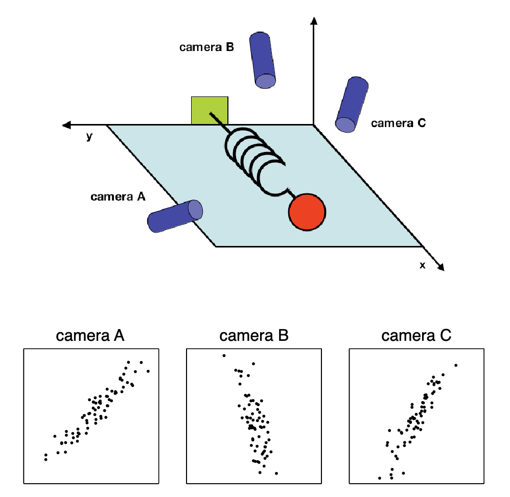
PCA
Experiment setup
- We choose three camera positions \(\vec{a}\), \(\vec{b}\), \(\vec{c}\) at some arbitrary angles with respect to the system.
- The angles between our measurements might not even be 90 degrees!
- Now, we record with the cameras for several minutes.
Question
The big question remains: how do we get from this data set to a simple equation of \(x\)?
PCA
Issues
- Which measurements to perform? (what is important?)
- What is noise?
- How many dimensions to measure? (what is redundant?)
Goal
Identify a most meaningful basis to re-express a data set.
In case of spring example, goal of PCA is to determine that \(x\) axis is the one that matters.
PCA
Measurement definition
\[ \vec{X} = \begin{bmatrix} x_A \\ y_A \\ x_B \\ y_B \\ x_C \\ y_C \end{bmatrix} \]
PCA
Naive basis
Naive basis: reflects the methods we used to measure the data. \[ \boldsymbol{B} = \begin{bmatrix} \boldsymbol{b_1} \\ \vdots \\ \boldsymbol{b_m} \end{bmatrix} = \begin{bmatrix} 1 & 0 & \dots & 0 \\ 0 & 1 & \dots & 0 \\ \vdots & \vdots & \ddots & 0 \\ 0 & 0 & \dots & 1 \end{bmatrix} = \boldsymbol{I} \]
PCA
Question
Is there another linear basis that best re-expresses our data set?
Important
Note the linearity assumption!
PCA
Basis change: definition
Let \(\boldsymbol{X}\) be the original data set (\(m\times n\) matrix with \(m=6\) and \(n=72000\)).
Let \(\boldsymbol{Y}\) be another \(m\times n\) matrix such that: \[\begin{align} \label{basis} &\boldsymbol{P}\boldsymbol{X} = \boldsymbol{Y} \end{align}\]
\(p_i\): rows of \(P\), \(x_i\): columns of \(X\), \(y_i\): columns of \(Y\)
Interpretation
- \(\boldsymbol{P}\) transforms \(\boldsymbol{X}\) into \(\boldsymbol{Y}\)
- \(\boldsymbol{P}\) is a rotation and stretch geometrically
- Rows of \(\boldsymbol{P}\) are a new set of basis vectors
PCA
Basis change
\[\begin{align*} &\boldsymbol{P}\boldsymbol{X} = \begin{bmatrix} \boldsymbol{p_1} \\ \vdots \\ \boldsymbol{p_m} \end{bmatrix} \begin{bmatrix} \boldsymbol{x_1} & \dots & \boldsymbol{x_n} \end{bmatrix} = \\ & = \begin{bmatrix} \boldsymbol{p_1} \cdot \boldsymbol{x_1} & \dots & \boldsymbol{p_1}\cdot\boldsymbol{x_n} \\ \vdots & \ddots & \vdots\\ \boldsymbol{p_m}\cdot\boldsymbol{x_1} & \dots & \boldsymbol{p_m}\cdot\boldsymbol{x_n} \end{bmatrix} \end{align*}\] \(j\)th coefficient of \(\boldsymbol{y_i}\) is a projection on the \(j\)th row of \(\boldsymbol{P}\), therefore, \(\boldsymbol{p_i}\) are a new set of basis vectors for columns of \(\boldsymbol{X}\).
\(\boldsymbol{p_i}\) will become principal components of \(\boldsymbol{X}\).
PCA
Questions on \(\boldsymbol{P}\)
- what is the best way to re-express \(\boldsymbol{X}\)?
- what is a good choice of \(\boldsymbol{P}\)?
How to express best?
Use signal-to-noise ratio. \[ SNR = \dfrac{\sigma^2_{signal}}{\sigma^2_{noise}} \] High SNR - precision measurement, low - noisy data.
PCA
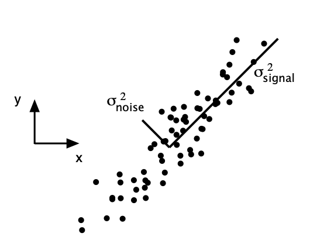
PCA
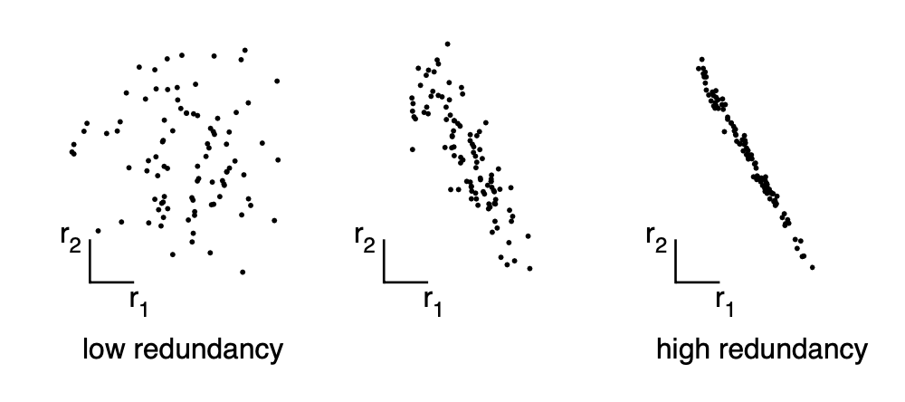
PCA
How do we generalize to higher dimensions?
Consider two sets of measurements with zero means \[\begin{align*} &A=\left\{a_1, a_2, \dots, a_n\right\}, B=\left\{b_1, b_2, \dots, b_n\right\}. \end{align*}\]
Variances are \[\begin{align*} &\sigma_A^2 = \dfrac{1}{n}\sum\limits_i a_i^2, \, \sigma_B^2 = \dfrac{1}{n}\sum\limits_i b_i^2,\\ \end{align*}\]
Covariance of \(A\) and \(B\) is \[ \sigma_{AB}^2 = \dfrac{1}{n}\sum\limits_i a_i b_i \]
PCA
Absolute value of covariance measures the degree of redundancy.
- \(\sigma_{AB} = 0 \Leftrightarrow A \text{ and } B\) are uncorrelated
- \(\sigma_{AB}^2 = \sigma_A^2 \text{ if } A=B\)
PCA
Matrix form
\[\begin{align*} &\boldsymbol{a} = \left[a_1 a_2 \dots a_n\right] \\ &\boldsymbol{b} = \left[b_1 b_2 \dots b_n\right] \\ &\sigma_{\boldsymbol{a}\boldsymbol{b}}^2 \equiv \dfrac{1}{n} \boldsymbol{a}\boldsymbol{b}^T \end{align*}\]
PCA
Generalization
Let’s generalize to a multiple number of vectors.
- Rename \(\boldsymbol{a}\) and \(\boldsymbol{b}\) to \(\boldsymbol{x_1}\) and \(\boldsymbol{x_2}\)
- Introduce additional measurement types \(\boldsymbol{x_i},\,i=\overline{3,m}\).
- Define a new matrix: \[ \boldsymbol{X} = \begin{bmatrix} \boldsymbol{x_1}\\ \vdots\\ \boldsymbol{x_m} \end{bmatrix} \]
PCA
Covariance matrix
\[ \boldsymbol{C_X} \equiv \dfrac{1}{n} \boldsymbol{X} \boldsymbol{X}^T \]
Covariance matrix properties
- \(\boldsymbol{C_X}\) is a square symmetric \(m\times m\) matrix
- diagonal terms of \(\boldsymbol{C_X}\) are the variance of particular measurement types
- off-diagonal terms of \(\boldsymbol{C_X}\) are the covariance between particular measurement types
PCA
Proof of symmetricity
Theorem 1. Inverse of orthogonal matrix is its transpose.
Let \(A\) be an \(m \times n\) orthogonal matrix where \(a_i\) is the \(i\)th column vector. We have \[ (A^T A)_{ij} = a_i^T a_j = \begin{cases} 1, \; \text{ if } i=j,\\ 0 \; \text{ otherwise} \end{cases} \] Therefore, \(A^T A = I \Rightarrow A^{-1} = A^T\).
PCA
Proof of symmetricity
Theorem 2. For any matrix \(A\), \(A^T A\) and \(A A^T\) are symmetric. \[\begin{align*} & (A A^T)^T = A^{TT} A^T = A A^T,\\ & (A^T A)^T = A^T A^{TT} = A^T A. \end{align*}\]
PCA
Covariance
\(\boldsymbol{C_X}\) captures the covariance between all possible pairs of measurements. The covariance values reflect the noise and redundancy in our measurements.
- In the diagonal terms, by assumption, large values correspond to interesting structure.
- In the off-diagonal terms large magnitudes correspond to high redundancy.
PCA
New goals
- minimize redundancy, measured by the magnitude of the covariance
- maximize the signal, measured by the variance.
Let’s transform \(\boldsymbol{C_X}\) into some optimized matrix \(\boldsymbol{C_Y}\).
Optimized matrix \(\boldsymbol{C_Y}\)
- all off-diagonal terms should be zero (this means that \(\boldsymbol{Y}\) is decorrelated);
- each successive dimension in \(\boldsymbol{Y}\) should be rank-ordered according to variance.
PCA
Diagonalizing
What are the methods for diagonalizing \(\boldsymbol{C_Y}\)?
We assume that all basis vectors \(\left\{\boldsymbol{p_1}, \dots, \boldsymbol{p_m}\right\}\) are orthonormal, that is, \(\boldsymbol{P}\) is an orthonormal matrix.
How does PCA work?
Looking at figure, it aligns the basis with the axis of maximal variance.
PCA
Algorithm
- Select a normalized direction in \(m\)-dimensional space along which the variance in \(X\) is maximized. Save this vector as \(\boldsymbol{p_1}\).
- Find another direction along which variance is maximized, however, because of the orthonormality condition, restrict the search to all directions orthogonal to all previous selected directions. Save this vector as \(\boldsymbol{p_i}\).
- Repeat this procedure until \(m\) vectors are selected.
Resulting ordered set of \(\boldsymbol{p}\) are called principal components.
PCA
Assumptions review
- Linearity. We assume the problem can be solved by change of basis.
- Large variances have important structure. This is sometimes incorrect.
- Principal components are orthogonal. This makes PCA soluble with linear algebra techniques.
Solving using eigenvector decomposition
PCA: First algebraic solution.
Setup
We have a dataset \(\boldsymbol{X}\) which is a \(m \times n\) matrix:
- \(m\) being number of dimensions (measurement types)
- \(n\) - number of samples.
Goal
Find some orthonormal matrix \(\boldsymbol{P}\) in \(\boldsymbol{Y}=\boldsymbol{P}\boldsymbol{X}\) such that \(\boldsymbol{C_Y} \equiv \dfrac{1}{n} \boldsymbol{Y}\boldsymbol{Y}^T\) is a diagonal matrix.
The rows of \(\boldsymbol{P}\) are the principal components of \(\boldsymbol{X}\).
PCA
\(\boldsymbol{C_Y}\) rewrite
Let’s rewrite \(\boldsymbol{C_Y}\) in terms of unknown variable \(\boldsymbol{P}\): \[\begin{align*} &\boldsymbol{C_Y} = \dfrac{1}{n}\boldsymbol{Y}\boldsymbol{Y}^T = \dfrac{1}{n}(\boldsymbol{P}\boldsymbol{X})(\boldsymbol{P}\boldsymbol{X})^T = \\ & = \dfrac{1}{n} \boldsymbol{P} \boldsymbol{X} \boldsymbol{X}^T \boldsymbol{P}^T = \boldsymbol{P}(\dfrac{1}{n} \boldsymbol{X} \boldsymbol{X}^T) \boldsymbol{P}^T = \\ &= \boldsymbol{P} \boldsymbol{C_X} \boldsymbol{P}^T, \end{align*}\] where \(\boldsymbol{C_X}\) is the covariance matrix of \(\boldsymbol{X}\).
PCA
Goal
Any symmetrix matrix \(A\) is diagonalized by an orthogonal matrix of its eigenvectors.
Theorem
Theorem 3. A matrix is symmetric \(\Leftrightarrow\) it is orthogonally diagonalizable.
\((\Rightarrow)\) If \(A\) is orthogonally diagonalizable, then \(A\) is symmetric.
Orthogonally diagonalizable means that \(\exists E: A = E D E^T\), where \(D\) is a diagonal matrix and \(E\) is a matrix that diagonalizes \(A\). Let’s compute \(A^T\): \[ A^T = (E D E^T)^T = E^{TT}D^T E^T = E D E^T = A \]
PCA
Theorem
Theorem 4. A symmetric matrix is diagonalized by a matrix of its orthonormal eigenvectors.
Let \(A\) be a square $n n $ symmetric matrix with eigenvectors \(\left\{e_1, \dots, e_n\right\}\). Let \(E=\left[e_1 \dots e_n\right]\). This theorem asserts that \(\exists \text{ diagonal matrix } D: A = E D E^T\).
First, let’s prove that any matrix can be orthogonally diagonalized if and only if it that matrix’s eigenvectors are all linearly independent.
Let \(A\) be some matrix with independent eigenvectors (not degenerate). Let \(D\) be a diagonal matrix where \(i\)th eigenvalue is placed in \(ii\)th position. We will show that \(AE=ED\).
PCA
Theorem
\[\begin{align*} & AE = \left[Ae_1 \dots Ae_n\right],\\ & ED = \left[\lambda_1 e_1 \dots \lambda_n e_n\right]. \end{align*}\] Evidently, if \(AE=ED\) then \(Ae_i = \lambda_i e_i \; \forall i\). This is the definition of the eigenvalue equation. Therefore, \(A = E D E^{-1}\).
PCA
Theorem
Now let’s prove that a symmetric matrix always has orthogonal eigenvectors. Suppose that \(\lambda_1\) and \(\lambda_1\) are distinct eigenvalues for eigenvectors \(e_1\) and \(e_2\). \[\begin{align*} &\lambda_1 e_1 \cdot e_2 = (\lambda_1 e_1)^T e_2 = (A e_1)^T e_2 =\\ & = e_1^T A^T e_2 = e_1^T A e_2 = e_1^T(\lambda_2 e_2) = \lambda_2 e_1 \cdot e_2. \end{align*}\] As \(\lambda_1 \neq \lambda_2\), then \(e_1 \cdot e_2 = 0\).
So, \(E\) is an orthogonal matrix, and by theorem 1 \(E^T = E^{-1}\) and \(A = E D E^T\).
PCA
Theorem
For symmetric matrix \(\boldsymbol{A}\) we have \(\boldsymbol{A} = \boldsymbol{E} \boldsymbol{D} \boldsymbol{E}^T\), where \(D\) is a diagonal matrix and \(E\) is a matrix of eigenvectors of \(A\) arranged as columns.
Note that \(\boldsymbol{A}\) might have \(r \leq m\) orthonormal eigenvectors where \(r\) is the rank. This will mean that \(\boldsymbol{A}\) is . Therefore, we’ll need to select additional \((m-r)\) additional orthogonal vectors to fill matrix \(\boldsymbol{E}\).
These vectors do not affect the final solution because variances associated with these directions are \(0\).
PCA
Important
We select the matrix \(\boldsymbol{P}\) to be a matrix where each row \(\boldsymbol{p_i}\) is an eigenvector of \(\dfrac{1}{n}\boldsymbol{X} \boldsymbol{X}^T\). By this selection, \(\boldsymbol{P} \equiv \boldsymbol{E}^T\). Keeping in mind that \(\boldsymbol{P}^{-1} = \boldsymbol{P}^T\) (Theorem 1), we have: \[\begin{align*} & \boldsymbol{C_Y} = \boldsymbol{P} \boldsymbol{C_X} \boldsymbol{P}^T \\ &= \boldsymbol{P}(\boldsymbol{E}^T \boldsymbol{D} \boldsymbol{E})\boldsymbol{P}^T \\ &= \boldsymbol{P}(\boldsymbol{P}^T \boldsymbol{D} \boldsymbol{P})\boldsymbol{P}^T = \\ & = (\boldsymbol{P} \boldsymbol{P}^T) \boldsymbol{D} (\boldsymbol{P} \boldsymbol{P}^T) \\ & = (\boldsymbol{P} \boldsymbol{P}^{-1})\boldsymbol{D}(\boldsymbol{P} \boldsymbol{P}^{-1}). \end{align*}\] Therefore, \(\boldsymbol{C_Y} = \boldsymbol{D}\).
PCA
Result
- choice of \(\boldsymbol{P}\) diagonalizes \(\boldsymbol{C_Y}\)
- principal components of \(\boldsymbol{X}\) are the eigenvectors of \(\boldsymbol{C_X} = \dfrac{1}{n}\boldsymbol{X} \boldsymbol{X}^T\)
- the \(i\)th diagonal value of \(\boldsymbol{C_Y}\) is the variance of \(\boldsymbol{X}\) along \(\boldsymbol{p_i}\)
Practical computation
- subtract the mean off each measurement type
- compute eigenvectors of \(\boldsymbol{C_X}\)
Singular value decomposition
PCA: Another algebraic solution
Setup
Let \(\boldsymbol{X}\) be an arbitrary \(n \times m\) matrix (!) and \(\boldsymbol{X}^T \boldsymbol{X}\) be a rank \(r\), square, symmetric \(m \times m\) matrix.
- \(\left\{\hat{\boldsymbol{v}_1}, \dots, \hat{\boldsymbol{v}_r}\right\}\) is the set of orthonormal \(m \times 1\) eigenvectors with associated eigenvalues \(\left\{\lambda_1, \dots, \lambda_r \right\}\) for the symmetric matrix \(\boldsymbol{X}^T \boldsymbol{X}\): \[ (\boldsymbol{X}^T \boldsymbol{X})\hat{\boldsymbol{v}_i} = \lambda_i \hat{\boldsymbol{v}_i} \]
- \(\sigma_i \equiv \sqrt{\lambda_i}\) are positive real and termed the singular values
- \(\left\{\hat{\boldsymbol{u}_1}, \dots, \hat{\boldsymbol{u}_r}\right\}\) is the set of \(n \times 1\) vectors defined by \(\hat{\boldsymbol{u}_i} \equiv \dfrac{1}{\sigma_i}\boldsymbol{X} \hat{\boldsymbol{v}_i}\).
PCA
Properties
- \(\hat{\boldsymbol{u}_i} \cdot \hat{\boldsymbol{u}_j} = \begin{cases} 1, \; \text{ if } i=j;\\ 0, \; \text{otherwise}\end{cases}\)
- \(\|\boldsymbol{X} \hat{\boldsymbol{v}_i}\| = \sigma_i\)
PCA
Theorem
Theorem 5. For any arbitrary \(m \times n\) matrix \(X\), the symmetric matrix \(X^T X\) has a set of orthonormal eigenvectors of \(\left\{\hat{\boldsymbol{v}_1}, \dots, \hat{\boldsymbol{v}_n}\right\}\) and a set of associated eigenvalues \(\left\{\lambda_1, \dots, \lambda_n\right\}\). The set of vectors \(\left\{\boldsymbol{X}\hat{\boldsymbol{v_1}}, \dots, \boldsymbol{X}\hat{\boldsymbol{v_n}}\right\}\) then forms an orthogonal basis, where each vector \(X\hat{\boldsymbol{v_i}}\) is of length \(\sqrt{\lambda_i}\).
\[\begin{align*} &(X \hat{v_i}) \cdot (X \hat{v_j}) = (X \hat{v_i})^T \cdot (X \hat{v_j}) = \\ & = \hat{v_i} X^T X \hat{v_j} = \hat{v_i}^T(\lambda_j v_j) = \lambda_j \hat{v_i} \cdot \hat{v_j} =\\ & = \lambda_j \delta_{ij}. \end{align*}\] And so we have \[ \|X \hat{v_i}\|^2 = (X \hat{v_i})\cdot(X \hat{v_i}) = \lambda_i. \]
PCA
The scalar version of SVD
Is a restatement of the third definition: \[\begin{align} \label{scalar_svd} &\boldsymbol{X} \hat{\boldsymbol{v}_i} = \sigma_i \hat{\boldsymbol{u}_i} \end{align}\]
The set of eigenvectors \(\left\{\hat{\boldsymbol{v}_1}, \dots, \hat{\boldsymbol{v}_r}\right\}\) and the set of vectors \(\left\{\hat{\boldsymbol{u}_1}, \dots, \hat{\boldsymbol{u}_r}\right\}\) are both bases in \(r\)-dimensional space.
PCA
The matrix version of SVD.
Construct a new diagonal matrix \(\Sigma\): \[ \Sigma \equiv \begin{bmatrix} \sigma_{\tilde{1}} \\ & \ddots & & \text{0} \\ & & \sigma_{\tilde{r}} \\ \text{0} & & & \ddots \\ & & & & 0 \end{bmatrix} \] where \(\sigma_{\tilde{1}} \geq \dots \geq \sigma_{\tilde{r}}\) are the rank-ordered set of singular values.
PCA
The matrix version of SVD.
Likewise we construct accompanying orthogonal matrices \[\begin{align*} & \boldsymbol{V} = \left[\hat{\boldsymbol{v_1}}, \dots, \hat{\boldsymbol{v_m}}\right],\; \boldsymbol{U} = \left[\hat{\boldsymbol{u_1}}, \dots, \hat{\boldsymbol{u_n}}\right], \end{align*}\] where we appended additional \((m-r)\) and \((n-r)\) orthonormal vectors to fill up the matrices for \(\boldsymbol{V}\) and \(\boldsymbol{U}\) respectively, in order to deal with degeneracy issues.
\[ \boldsymbol{X}\boldsymbol{V} = \boldsymbol{U} \boldsymbol{\Sigma}, \] where each column of \(\boldsymbol{V}\) and \(\boldsymbol{U}\) perform the scalar version of decomposition \(\eqref{scalar_svd}\).
As \(\boldsymbol{V}\) is orthogonal, we multiply both sides by \(\boldsymbol{V}^{-1}=\boldsymbol{V}^T\) and obtain \[\begin{align} \label{svd} &\boldsymbol{X} = \boldsymbol{U} \boldsymbol{\Sigma} \boldsymbol{V}^T. \end{align}\]
PCA
Interpretation
Equation \(\eqref{svd}\) states that any arbitrary matrix \(\boldsymbol{X}\) can be converted into an orthogonal matrix, diagonal matrix, and another orthogonal matrix (or a rotation, a stretch, and a second rotation).
Reinterpret equation \(\eqref{scalar_svd}\) as \(\boldsymbol{X}\boldsymbol{a} = k\boldsymbol{b}\), where \(\boldsymbol{a}\) and \(\boldsymbol{b}\) are column vectors and \(k\) is a scalar constant.
The set \(\left\{\hat{\boldsymbol{v_1}}, \dots, \hat{\boldsymbol{v_m}}\right\}\) is analogous to \(\boldsymbol{a}\) and \(\left\{\hat{\boldsymbol{u_1}}, \dots, \hat{\boldsymbol{u_n}}\right\}\) is analogous to \(\boldsymbol{b}\).
\(\left\{\hat{\boldsymbol{v_1}}, \dots, \hat{\boldsymbol{v_m}}\right\}\) and \(\left\{\hat{\boldsymbol{u_1}}, \dots, \hat{\boldsymbol{u_n}}\right\}\) are orthonormal sets of vectors which span an \(m\) or \(n\) dimensional space, respectively.
Inputs are \(\boldsymbol{a}\) and outputs are \(\boldsymbol{b}\). Can we formalize the view that \(\left\{\hat{\boldsymbol{v_1}}, \dots, \hat{\boldsymbol{v_m}}\right\}\) and \(\left\{\hat{\boldsymbol{u_1}}, \dots, \hat{\boldsymbol{u_n}}\right\}\) span all possible inputs and outputs?
PCA
Interpretation
From \(\eqref{svd}\) we have \[\begin{align*} & \boldsymbol{X} = \boldsymbol{U} \boldsymbol{\Sigma} \boldsymbol{V}^T \Rightarrow \\ & \boldsymbol{U}^T \boldsymbol{X} = \boldsymbol{\Sigma} \boldsymbol{V}^T \Rightarrow \\ & \boldsymbol{U}^T \boldsymbol{X} = \boldsymbol{Z}, \end{align*}\] where \(\boldsymbol{Z} \equiv \boldsymbol{\Sigma} \boldsymbol{V}^T\).
PCA
Interpretation
Comparing to \(\eqref{basis}\), \(\left\{\hat{\boldsymbol{u_1}}, \dots, \hat{\boldsymbol{u_n}}\right\}\) perform the same role as \(\left\{\hat{\boldsymbol{p_1}}, \dots, \hat{\boldsymbol{p_m}}\right\}\). Hence, \(\boldsymbol{U}^T\) is a change of basis from \(\boldsymbol{X}\) to \(\boldsymbol{Z}\).
Therefore, from the fact that the orthonormal basis \(\boldsymbol{U}^T\) (or \(\boldsymbol{P}\)) transforms column vectors it follows that \(\boldsymbol{U}^T\) is a basis that spans the columns of \(\boldsymbol{X}\). Bases that span the columns are termed column spaces.
Column spaces are equivalent to matrix outputs.
Row spaces are equivalent to matrix inputs.
PCA
How are PCA and SVD related?
Consider original \(m \times n\) matrix \(\boldsymbol{X}\). Define \[ \boldsymbol{Y} \equiv \dfrac{1}{\sqrt{n}} \boldsymbol{X}^T, \] where each column of \(\boldsymbol{Y}\) has zero mean. Consider: \[\begin{align*} &\boldsymbol{Y}^T \boldsymbol{Y} = \left(\dfrac{1}{\sqrt{n}}\boldsymbol{X}^T\right)^T\left(\dfrac{1}{\sqrt{n}}\boldsymbol{X}^T\right) = \dfrac{1}{n}\boldsymbol{X} \boldsymbol{X}^T = \boldsymbol{C_X}. \end{align*}\] By construction \(\boldsymbol{Y}^T \boldsymbol{Y}\) equals the covariance matrix of \(\boldsymbol{X}\). Principal components of \(\boldsymbol{X}\) are the eigenvectors of \(\boldsymbol{C_X}\). If we calculate the SVD of \(\boldsymbol{Y}\), the columns of matrix \(\boldsymbol{V}\) contain the eigenvectors of \(\boldsymbol{Y}^T \boldsymbol{Y} = \boldsymbol{C_X}\).
Therefore, columns of \(\boldsymbol{V}\) are the principal components of \(\boldsymbol{X}\).
PCA
Interpretation
\(\boldsymbol{V}\) spans the row space of \(\boldsymbol{Y} \equiv \dfrac{1}{\sqrt{n}} \boldsymbol{X}^T\). Therefore, \(\boldsymbol{V}\) must also span the column space of \(\dfrac{1}{\sqrt{n}} \boldsymbol{X}\).
We conclude that finding the principal components amounts to finding an orthonormal basis that spans the column space of \(\boldsymbol{X}\).
PCA
Summary of PCA
- Organize data as \(m \times n\) matrix, where \(m\) is the number of measurement types and \(n\) is the number of samples
- Subtract off the mean for each measurement type
- Calculate the SVD or the eigenvectors of the covariance
PCA
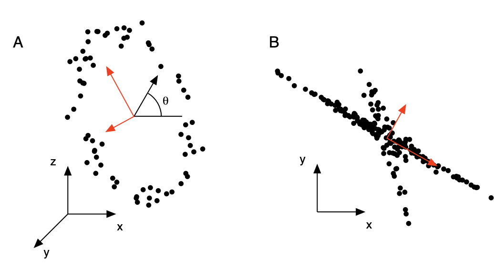
PCA
Loss function
It can be proved that under a common loss function, mean squared error (\(L_2\) norm), PCA provides the optimal reduced representation of the data.
This means that selecting orthogonal directions for principal components is the best solution to predicting the original data.
Kernel PCA
Decorrelation is removing second-order dependencies.
Higher-order dependencies: if prior knowledge is known about the problem, then a nonlinearity (i.e. kernel) might be applied to the data to transform the data to a more appropriate naive basis. This parametric approach is often termed kernel PCA.
Latent semantic analysis
LSA
Basic concepts: LSA (latent semantic analysis)
SVD is applied to a term-document matrix (each cell weighted by log frequency and normalized by entropy), and then the first e.g. 300 dimensions are used as the LSA embedding.
Alternatively, this is PCA applied to NLP data.
LSA
Issues with TF-IDF
- focus on spelling and word usage
- lemmatization might group some words, but synonyms will be handled separately
- TF-IDF assumes that frequency is the only thing that matters
Solution
Use topics - aggregated words.
PCA in Python
PCA
Basic concepts
- Data preprocessing: Before applying PCA, it is important to preprocess the data by removing any missing values and scaling the features to have zero mean and unit variance.
- Covariance matrix: PCA starts by computing a covariance matrix, which is a matrix that contains the pairwise covariances between all the features in the dataset.
- Eigenvectors and eigenvalues: The eigenvectors of the covariance matrix are the principal components (PCs), and the corresponding eigenvalues are the variance explained by each PC.
PCA
Basic concepts
- Dimensionality reduction: The data can then be projected onto the chosen PCs by multiplying the original data matrix with the matrix of PCs. This results in a lower-dimensional representation of the data.
- Reconstruction: If needed, the reduced data can be reconstructed back to the original space by multiplying the reduced data matrix with the transpose of the matrix of PCs.
PCA
What is a principal component: recap
In principal component analysis, a principal component is a new feature that is constructed from a linear combination of the original features in a dataset.
- The principal components are ordered such that the first principal component has the highest possible variance (i.e., the greatest amount of spread or dispersion in the data)
- each subsequent component in turn has the highest variance possible under the constraint that it is orthogonal (i.e., uncorrelated) to the previous components.
Idea behind PCA
Reduce the dimensionality of a dataset by projecting the data onto a lower-dimensional space, while still preserving as much of the variance in the data as possible.
PCA
Making sense of principal components
PCs are the directions in which the data varies the most. To make sense of the PCs, you can consider the following:
- Variance explained: The PCs are ranked in order of the variance they explain. The first PC explains the most variance, the second PC explains the second most variance, and so on. You can check the percentage of variance explained by each PC to understand how much information each PC captures.
- Loadings: Loadings are the coefficients that describe the relationship between the original features and the PCs. You can check the loadings of each feature to see which features contribute the most to each PC.
PCA
PCA items
- Components: The PCs are linear combinations of the original features. The components of each PC tell you which features contribute the most to each PC.
- Data visualization: You can also use data visualization like scatter plots or biplots to understand the PCs. Scatter plots can show you how the data is distributed along each PC, and biplots can show you the relationship between the original features and the PCs.
PCA math summary
Preliminary
Before applying PCA, missing values need to be removed from the dataset and each variable should be scaled to have zero mean and unit variance.
Compute
\(\text{Covariance matrix} = (1/n) \cdot X^T \cdot X\), where \(X\) is the data matrix with \(n\) samples and \(p\) features.
Then eigenvectors and eigenvalues are obtained by solving the following equation: \[ \text{Covariance matrix} \cdot v = \lambda \cdot v \] where \(v\) is the eigenvector and \(\lambda\) is the corresponding eigenvalue.
PCA math summary
Compute
- To complete the dimensionality reduction, data can then be projected onto the chosen PCs by multiplying the original data matrix with the matrix of PCs: \[ X_{reduced} = X \cdot PCs \]
- To reconstruct the reduced data back to the original space, we multiply the reduced data matrix with the transpose of the matrix of PCs: \[ X_{reconstructed} = X_{reduced} * {PCs}^T \]
PCA in Python
PCA in Python
# Compute covariance matrix
cov_matrix = np.cov(data, rowvar=False)
# Compute eigenvectors and eigenvalues
eigenvalues, eigenvectors = np.linalg.eig(cov_matrix)
# Sort in descending order
idx = np.argsort(-eigenvalues)
eigenvalues = eigenvalues[idx]
eigenvectors = eigenvectors[:,idx]
# Select top principal components
k = 2
eigenvectors = eigenvectors[:,:k]PCA in Python
Non-linear reduction methods
Neighbor graph algorithms
Common steps
- Compute high dimensional probabilities \(p\).
- Compute low dimensional probabilities \(q\).
- Calculate the difference between the probabilities by a given cost function \(C(p,q)\).
- Minimize the cost function.
SNE
Definition
Stochastic Neighbor Embedding (SNE) tries to place the objects in a low-dimensional space so as to optimally preserve neighborhood identity, and can be naturally extended to allow multiple different low-d images of each object.
SNE
Step 1.
High-dimensional probabilities.
Compute probability that that object \(i\) would pick \(j\) as neighbor: \[ p_{ij} = \dfrac{exp\left(-d_{ij}^2\right)}{\sum\limits_{k \neq i} exp\left(-d_{ik}^2\right)} \] Values \(d_{ij}\) represent between points \(i\) and \(j\): \[ d_{ij}^2 = \dfrac{\|\boldsymbol{x}_i-\boldsymbol{x}_j\|^2}{2\sigma_i^2} \]
SNE
Step 1.
What is the meaning of \(\sigma_i\)? It is found by a binary search that makes the Shannon entropy of the distribution over neighbors equal to \(log_2 k\), where \(k\) is the effective number of local neighbors or .
We compute entropy via: \[\begin{align*} &H = -\sum\limits_j p_{ij} log_2 p_{ij} = log_2 k,\\ &k = 2^{-\sum\limits_j p_{ij} log_2 p_{ij}} \end{align*}\] By tuning \(\sigma_i\) we try to match the value of \(k\) set by the user.
SNE
Step 1.
The higher the effective number of local neighbors (perplexity), the higher \(\sigma_i\) and the wider the Gaussian function used in the dissimilarities.
Intuition
Mathematical intuition: The higher the perplexity, the more likely it is to consider points that are far away as neighbors.
SNE
Step 2.
Low-dimensional probabilities.
Now that we have the high-dimensional probabilities, we move on to calculate the low dimensional ones, which depend on where the data points are mapped in the low dimensional space.
In the low-dimensional space we also use Gaussian neighborhoods but with a fixed variance (which we set without loss of generality to be \(\dfrac{1}{2}\)) so the induced probability \(q_{ij}\) that point \(i\) picks point \(j\) as its neighbor is a function of the low-dimensional images \(y_i\) of all the objects and is given by expression: \[ q_{ij} = \dfrac{exp\left(-\|\boldsymbol{y}_i-\boldsymbol{y}_j\|^2\right)}{\sum\limits_{k \neq i} exp\left(-\|\boldsymbol{y}_i-\boldsymbol{y}_k\|^2\right)} \]
SNE
Step 3.
Choice of cost function.
If the points \(Y_i\) are placed correctly in the low-dimensional space, the conditional probabilities \(p\) and \(q\) will be very similar. To measure the mismatch between both probabilities, SNE uses the as a loss function for each point. Each point in both high and low dimensional space has a conditional probability to call another point its neighbor. Hence, we have as many loss functions as we have data points. We define the cost function as the sum of the KL divergences over all data points, \[ C = \sum\limits_i \sum\limits_j p_{ij} log\dfrac{p_{ij}}{q_{ij}} = \sum\limits_i KL(P_i \| Q_I). \]
SNE
Kullback-Leibler Divergence
The KL divergence, which is closely related to relative entropy, information divergence, and information for discrimination, is a non-symmetric measure of the difference between two probability distributions \(p(x)\) and \(q(x)\).
Specifically, the KL divergence of \(q(x)\) from \(p(x)\), denoted DKL(p(x),q(x)), is a measure of the information lost when \(q(x)\) is used to approximate \(p(x)\).
SNE
Kullback-Leibler Divergence
Let \(p(x)\) and \(q(x)\) are two probability distributions of a discrete random variable \(x\). That is, both \(p(x)\) and \(q(x)\) sum up to \(1\), and \(p(x) > 0\) and \(q(x) > 0\) \(\forall x \in X\).
KL divergence is defined as: \[ KL(p(x) \| q(x)) = \sum\limits_{x \in X} p(x) ln \dfrac{p(x)}{q(x)}. \] Continuous version: \[ KL(p(x) \| q(x)) = \int\limits_{-\infty}^{\infty} p(x) ln \dfrac{p(x)}{q(x)}dx. \]
SNE
Differentiation of the cost function
\[ \dfrac{\partial C}{\partial \boldsymbol{y}_i} = 2\sum\limits_j (\boldsymbol{y}_i-\boldsymbol{y}_j)(p_{ij}-q_{ij}+p_{ji}-q_{ij}). \]
Interpretation
A sum of forces pulling toward or pushing it away depending on whether is observed to be a neighbor more or less often than desired.
SNE
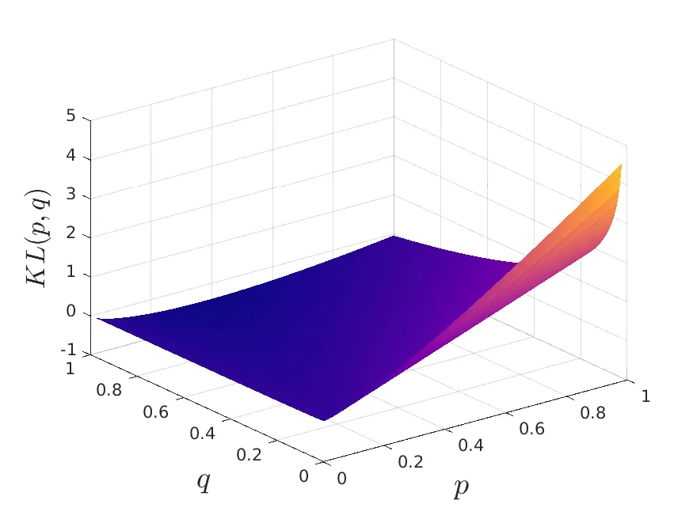
SNE
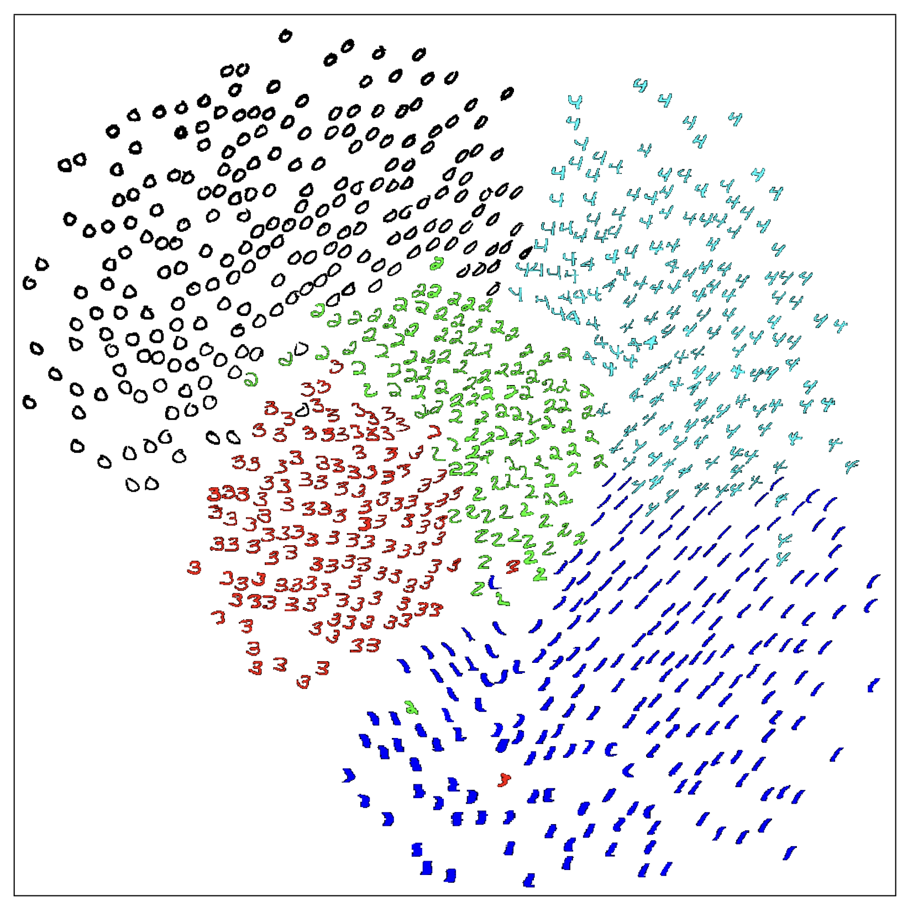
SNE
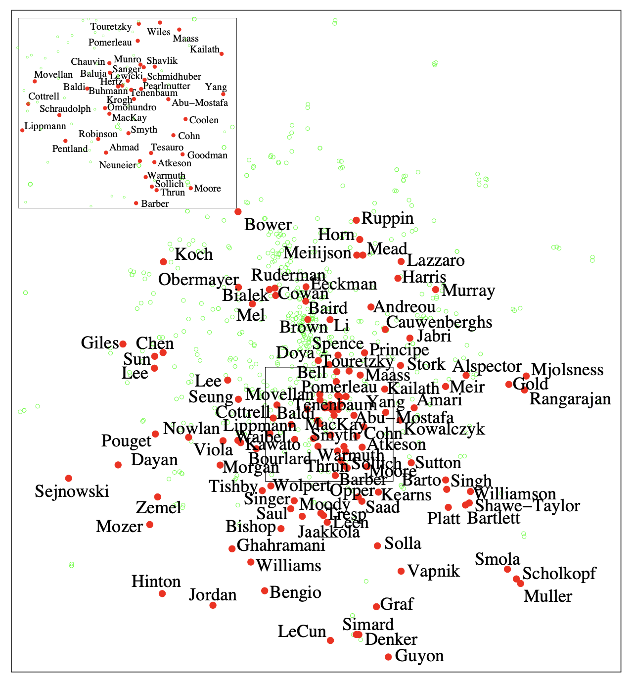
t-SNE
Problems
- cost function is very difficult to optimize
- a crowding problem
Solutions
- Symmetrization
- use of t-distributions for the low-dimensional probabilities
t-SNE
Symmetric SNE.
The probability of point \(x_i\) to consider point \(x_j\) as its neighbor is not the same probability that point \(x_j\) would consider point \(x_i\) as a neighbor. We symmetrize pairwise probabilities in high dimensional space by defining \[ \tilde{p}_{ij} = \dfrac{p_{ij}+p_{ji}}{2n} \]
t-SNE
The Crowding Problem
If we want to correctly project close distances between points, the moderate distances are distorted and appear as huge distances in the low dimensional space.
To solve this, use the Student t-Distribution (which is what gives the ‘t’ to t-SNE) with one degree of freedom for the low-dimensional probabilities: \[ q_{ij} = \dfrac{\left(1+\|y_i-y_j\|^2\right)^{-1}}{\sum\limits_{k \neq l} \left(1+\|y_k-y_l\|^2\right)^{-1}} \]
Now \(p_{ij}=p_{ji}\) and \(q_{ij}=q_{ji}\), and the gradient of the cost function \[ C = \sum\limits_i \sum\limits_j \tilde{p}_{ij} log\dfrac{\tilde{p}_{ij}}{q_{ij}} \] is easier to compute.
t-SNE
Local structure
Since t-SNE also uses KL divergence as its loss function, it also carries the problems discussed in the previous section. This is not to say that it is completely ignored, but the main takeaway is that t-SNE severely prioritizes the conservation of the local structure.
Global structure
Since the KL divergence function does not penalize the misplacement in low dimensional space of points that are far away in high dimensional space, we can conclude that the global structure is not well preserved. t-SNE will group similar data points together into clusters, but distances between clusters might not mean anything.
t-SNE
from sklearn.manifold import TSNE
import matplotlib.pyplot as plt
def read_glove(file_path):
with open(file_path) as f:
for i, line in enumerate(f):
fields = line.rstrip().split(' ')
vec = [float(x) for x in fields[1:]]
word = fields[0]
yield (word, vec)
words = []
vectors = []
for word, vec in read_glove('data/glove/glove.42B.300d.txt'):
words.append(word)
vectors.append(vec)
model = TSNE(n_components=2, init='pca', random_state=0) coordinates = model.fit_transform(vectors)
plt.figure(figsize=(8, 8))
for word, xy in zip(words, coordinates):
plt.scatter(xy[0], xy[1])
plt.annotate(word,
plt.xlim(25, 55)
plt.ylim(-15, 15)
plt.show()t-SNE
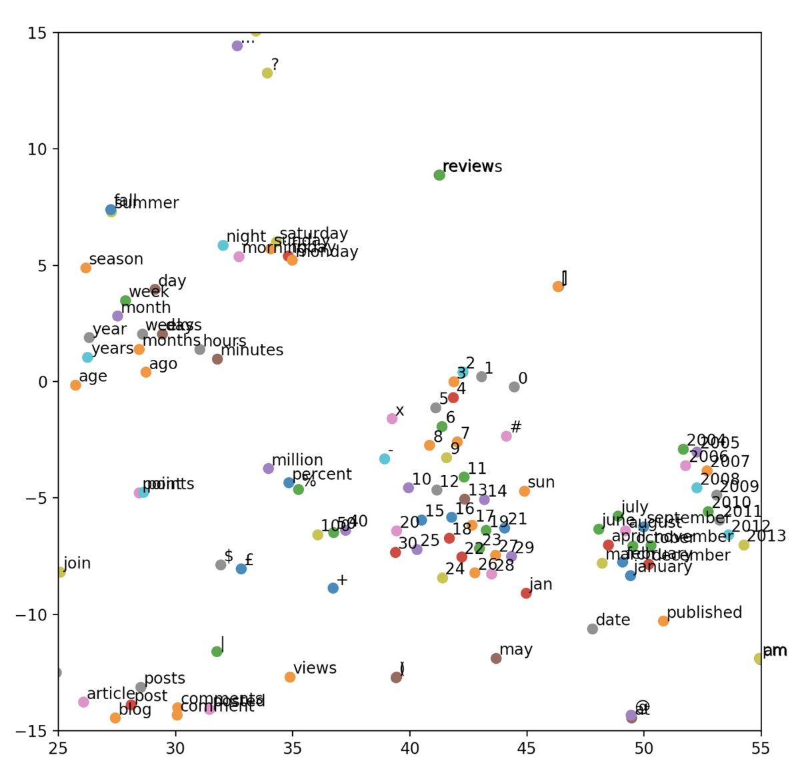GloVe embeddings visualized by t-SNE
Python PCA/t-SNE Visualization
Python PCA Visualization
Use MNIST data set.
Get libraries
from __future__ import print_function
import time
import numpy as np
import pandas as pd
from sklearn.datasets import fetch_mldata
from sklearn.decomposition import PCA
from sklearn.manifold import TSNE
%matplotlib inline
import matplotlib.pyplot as plt
from mpl_toolkits.mplot3d import Axes3D
import seaborn as snsPython PCA Visualization
Python PCA Visualization
Convert to Pandas and randomize
feat_cols = [ 'pixel'+str(i) for i in range(X.shape[1]) ]
df = pd.DataFrame(X,columns=feat_cols)
df['y'] = y
df['label'] = df['y'].apply(lambda i: str(i))
X, y = None, None
print('Size of the dataframe: {}'.format(df.shape))
[out] Size of the dataframe: (70000, 785)
# For reproducibility of the results
np.random.seed(42)
rndperm = np.random.permutation(df.shape[0])Python PCA Visualization

Python PCA Visualization
Use Scikit-learn for PCA
pca = PCA(n_components=3)
pca_result = pca.fit_transform(df[feat_cols].values)
df['pca-one'] = pca_result[:,0]
df['pca-two'] = pca_result[:,1]
df['pca-three'] = pca_result[:,2]
print('Explained variation per principal component: {}'.format(pca.explained_variance_ratio_))
Explained variation per principal component: [0.09746116 0.07155445 0.06149531]Python PCA Visualization
Python PCA Visualization
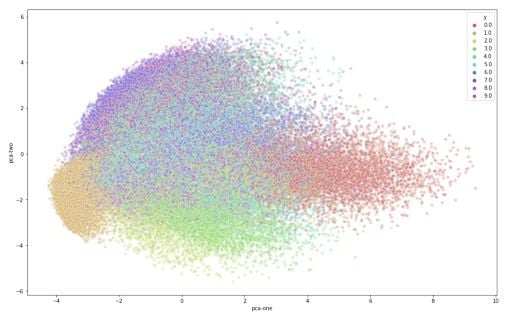Python PCA Visualization
Scatterplot of first 2 PCs in 3D
Python PCA Visualization
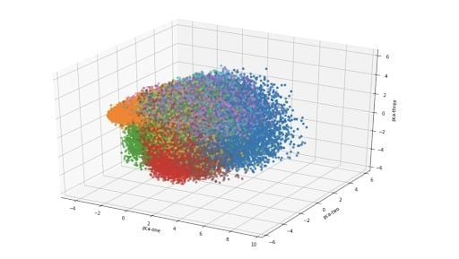Python t-SNE Visualization
Run PCA
N = 10000
df_subset = df.loc[rndperm[:N],:].copy()
data_subset = df_subset[feat_cols].values
pca = PCA(n_components=3)
pca_result = pca.fit_transform(data_subset)
df_subset['pca-one'] = pca_result[:,0]
df_subset['pca-two'] = pca_result[:,1]
df_subset['pca-three'] = pca_result[:,2]
print('Explained variation per principal component: {}'.format(pca.explained_variance_ratio_))
[out] Explained variation per principal component: [0.09730166 0.07135901 0.06183721]Python t-SNE Visualization
Run t-SNE
time_start = time.time()
tsne = TSNE(n_components=2, verbose=1, perplexity=40, n_iter=300)
tsne_results = tsne.fit_transform(data_subset)
print('t-SNE done! Time elapsed: {} seconds'.format(time.time()-time_start))
[out] [t-SNE] Computing 121 nearest neighbors...
[t-SNE] Indexed 10000 samples in 0.564s...
[t-SNE] Computed neighbors for 10000 samples in 121.191s...
[t-SNE] Computed conditional probabilities for sample 1000 / 10000
...
[t-SNE] Mean sigma: 2.129023
[t-SNE] KL divergence after 300 iterations: 2.823509
t-SNE done! Time elapsed: 157.3975932598114 secondsPython t-SNE Visualization
Python t-SNE Visualization
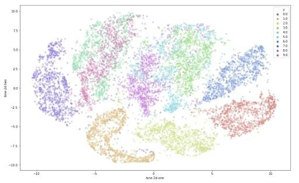Plot t-SNE